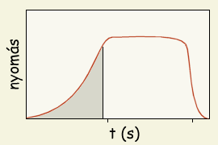
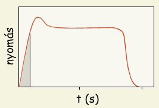

|  |
| 1. Ábra: Lassan felépülő üzemi nyomás |
A motor begyújtásának módja fontosabb mint első pillantásra tűnhet és könnyen a kilövés sorsát eldöntő tényezővé válhat. A begyújtás milyensége ülönösen fontos lehet többmotros rakéták, nagy motrok, illetve légköri nyomáson lassan égő üzemanyagok használata esetén. Jobban megérthető ez egy egyszerű példán keresztül: KNO3/dextróz üzemanyagú motrok begyújtásánál megfigyelhető, hogy mindig eltelik egy kis idő (max. néhány másodperc) az indítógomb lenyomása és a rakéta elindulása között, amikor is a rakéta még a kilövőállványon van, mozdulatlanul áll és egyre fokozódó mértékben füstöl. Ez idő alatt az égés kiterjed a teljes tervezett égési felületre és felépül az üzemi nyomás, amely a motor helyes működéséhez (a tervezett tolóerő leadásához) szükséges. Természetesen ehhez el kell égnie bizonyos mennyiségű üzemanyagnak, ami később, a repülés során hasznos tolóerőt szolgáltathatna, csökken tehát a motor összimpulzusa. Grafikusan ábrázolva a kamranyomást az idő függvényében, az 1. ábrán látható - lassú égésű üzemanyagokra jellemző - tipikus nyomásgörbéhez jutunk.
Megfigyelhető az ábrán, hogy a begyújtást követően a nyomás kezdetben lassan, majd egyre gyorsabban növekszik. A nyomás növekedtével fokozódó mértékben nő az üzemanyag égési sebessége, ami további gyors nyomásnövekedést eredményez. A kamranyomás tehát exponenciálisan nő mindaddig amíg el nem éri a tervezett értéket, ahol beáll az egyensúly az üzemanyag égése során fejlődő és a fúvókán távozó gázmennyiség között. Ez az egyensúlyi nyomás a rakétamotor üzemi nyomása (az ábrán valahol az első másodperc táján áll be). A kamranyomás az üzemanyag elfogytával gyorsan visszaesik nullára (az ábrán a második másodpercet követően). A szürkített rész azt az üzemanyagmennyiséget jelöli, ami elfogy amíg a nyomás felépül. Ebben a szakaszban a leadott impulzusmennyiség nagyon kevés, a rakéta gyakorlatilag a kilövőn tölti ezt az időt. A lassan felépülő nyomás tehát nem kívánatos; extrém esetben eléghet az egész üzemanyagmennyiség eléghet anélkül, hogy a kamranyomás elérné a tervezett értéket és a rakéta az állványon marad .
|  |
| 2. Ábra: Gyorsan felépülő üzemi nyomás |
Két módszer (vagy ezek kombinációja) használatos ennek a jelenségnek a kiküszöbölésére: az elterjedtebb a megfelelő gyújtó használata, amely nem csak egyszerűen lángot ad, hanem egy kis gyújtótöltet segítségével ugrásszerűen megnöveli a nyomást. Másik megoldás a fúvóka lezárása egy olyan fallal, amely egy bizonyos nyomáson átszakad (egy "dugó" amelyet majd kilő a nyomás). Mindkét módszer a nyomás hirtelen növekedését biztosítja, ezáltal az üzemanyag magas nyomáson kezdhet el égni és teljes mennyiségében tolóerő fejlesztésére fordítódik. Erre az esetre jellemző nyomásgörbe a második ábrán látható. A nyomás ebben az esetben azonnal felugrik (maximuma az gyújtótöltettől függ) majd beáll a tervezett értékre, az összes üzemanyag a tervezett nyomáson ég el és fejleszt hasznos tolóerőt. A nyomás felépüléséhez nem az üzemanyag, hanem a gyújtótöltet energiája használódott el. A görbe platója ezáltal kicsit hosszabb lesz, tovább tart a nyomás a motorban. Természetesen a diagramok az ideális esetet ábrázoljak, a valóságban ettől eltérő nyomásgörbékkel találkozunk majd.
Gyorsan égő és könnyen gyulladó hajtóanyagok esetén (pl. lőporos motrok) az előbbiekben tárgyalt jelenség csak nagyon kevéssé vagy egyáltalán nem érzékelhető, ezért nincs szükség különleges gyújtókra. Lőporos motrok indítására egy közönséges gyújtózsinór vagy egyszerű elektromos gyújtás is megfelel. Ez esetben ugyanis az égési sebesség már légköri nyomáson is elég nagy ahhoz, hogy az égés egy pillanat alatt kiterjedjen a teljes égési felületre. Préselt por formájában használt üzemanyagok esetén pedig egyenesen elenjavallott túl erős gyujtótöltet használata, mert elrepesztheti a törékeny üzemanyagblokkot. Érthető tehát, hogy különböző rakétamotrok különböző gyújtást igényelnek, az üzemanyag típusától és a motor felépítésétől függően. A szükséges gyújtástípus általában a motor leírásánál van részletezve.